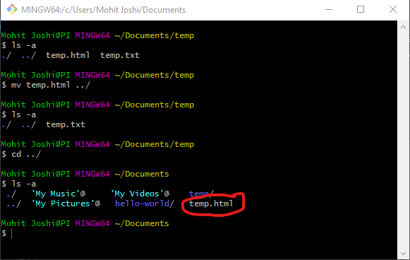
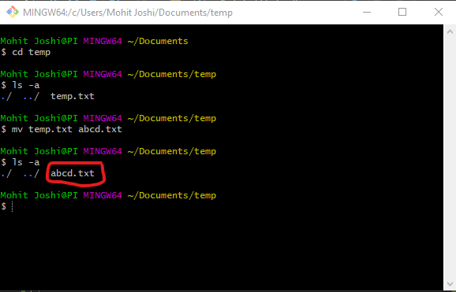
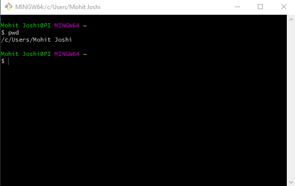
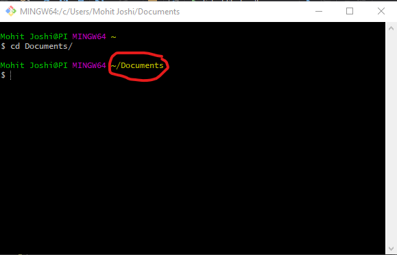
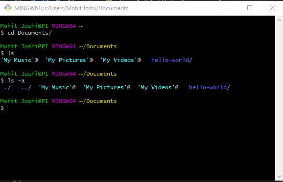
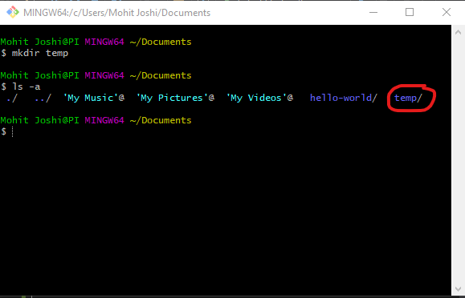
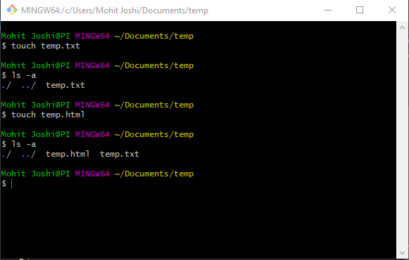
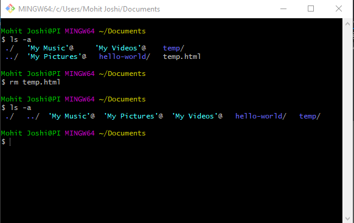

There are various liux commands used repeatedly throughout the course. The commands are listed below in order of their difficulty/usefulness.
- pwd(Present Working Directory)
- cd(Change Directory)
- ls(List)
- mkdir(Make Directory)
- touch
- rm(ReMove)
- mv(MoVe)
- Move files/folders. 
- Rename files/folders. 
This command is perhaps the most basic and most used command in linux. It is used to idetify which directory you are in your computer and are running commands from.
As name suggests, this command is used to change directories.
Remember: "." matches your current directory, ".." matches your parent directory, and "`" matches your home directory.
This command provides a list of everything in your working directory. One could use "$ls -a" where (a) refers to all to show hidden files and folders as well as the path to the current and parent folder.
This command created a directory in the current working directory.
The touch command creates an empty file.
Notice that touch can create a file of any type. One can also create files using an editor like vi. All of vi is described in another page.
This command removes files and folders. However it is safe to use "$rm -r" while deleting folders so that the command calls itself recursively to delete all subfolders.
This command does two things: